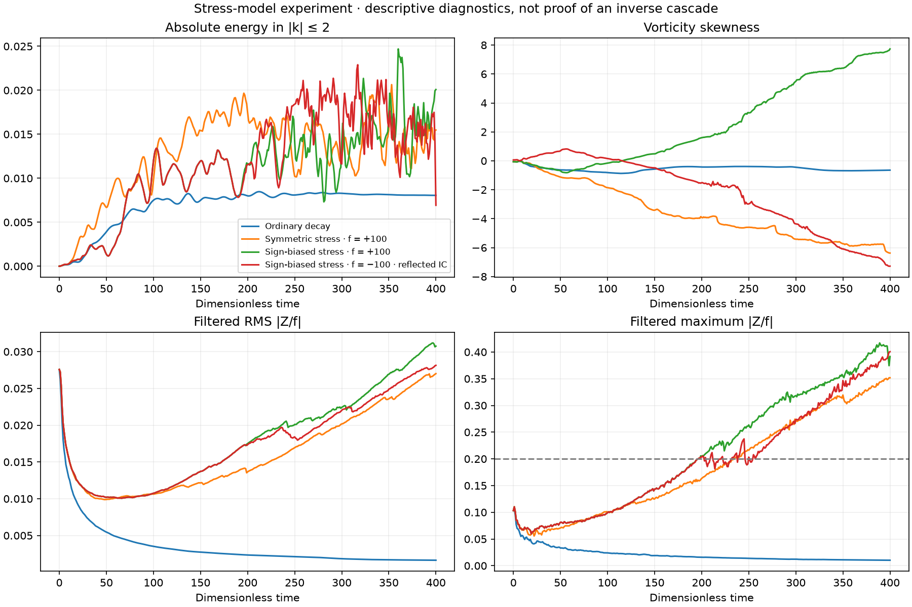

COMPLETED ON UNITY · 256² · DIMENSIONLESS t = 0–400
Can a nonlinear stress select vortex sign?
Four matched horizontal 2D Oceananigans experiments test a projected, strain-aligned stress. These are a minimal-model hypothesis, not resolved convection or a closure derived from the Breeze runs.
All four controls
Top: ordinary decay and symmetric stress. Bottom: sign-biased +f and reflected −f. One horizontal plane; no tracer or depth layers. Positive ζ is cyclonic for +f; negative ζ is cyclonic for −f. Fixed shared asinh scale, width 0.1, full range ±47.5339; no clipping or framewise rescaling. Each movie has 401 frames at 12 fps (33.42 seconds).
What this test shows
The sign-biased cases end with strong skewness aligned with f: +7.73 for +f and −7.28 for −f. The symmetric case also develops strong skewness (−6.37 in this realization), so skewness alone is not evidence of an imposed sign preference. Final images contain several intense cores, rather than a demonstrated single domain-scale vortex.
| Case | Final skewness | Final energy, |k| ≤ 2 | Peak filtered |Z/f| |
|---|---|---|---|
| Decay | −0.64 | 0.00805 | 0.107 |
| Symmetric | −6.37 | 0.01548 | 0.352 |
| Biased +f | +7.73 | 0.02008 | 0.417 |
| Biased −f, reflected IC | −7.28 | 0.00693 | 0.401 |
This supports sign selection as a possible behavior of the chosen closure; it does not establish the Breeze mechanism or a robust LSV regime. The reflected run is not an independent realization. Short-time reflection symmetry passed validation; the long trajectories do not remain pointwise matched. One seed and one resolution cannot establish statistical sign selection. The stress injects directly into low modes, so neither low-mode growth nor these movies proves an inverse cascade.
Individual +f evolution
Model and numerical checks
Periodic 2π × 2π domain; molecular viscosity ν = 10⁻⁴. With Z = curl(PU), the deviatoric stress is P[−2νT(Z)S(PU)], where νT = ν₀ + ν₁ Z/f + ν₂(Z/f)². P retains |k| ≤ 16. The stress replaces the earlier instability forcing; there is no beta, drag, hyperviscosity or moist physics.
Forced cases use ν₀ = −2×10⁻⁴ and ν₂ = 10⁻². The biased pair additionally uses ν₁ = −10⁻³; the symmetric case uses ν₁ = 0. The decay case has no modeled stress. f = ±100 and time are dimensionless, not Jupiter's dimensional rotation rate or Earth days.
All 49 implementation checks passed before production. Recorded linear, quadratic and cubic stress work agrees with the independent work identity; cubic total energy work is nonpositive. This is an algebraic source check, not closure of a fully integrated numerical energy budget. Both movies passed complete decode and frame-count checks on Unity.
Filtered RMS |Z/f| finishes near 0.027–0.031 in stress cases, but localized maxima reach 0.35–0.42. Fewer than 0.8% of cells exceed |Z/f| = 0.2 at any saved frame. Those intense cores are precisely where truncating a weak-vorticity expansion is least secure; scale separation and fast convective adjustment are assumed rather than demonstrated.

Machine-readable report · Protocol and validation · Source code
Scalar histories: decay · symmetric · biased +f · biased −f.